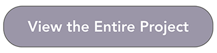

Portfolio
To provide students with experiences to develop theory-grounded and research-based competencies for the innovative, aesthetic, effective and sustainable design/development and management of technologies for learning opportunities and systems.
Objective 1.1: Students are able to design/develop learning opportunities and systems including direct instruction,
constructivist learning, collaborative work, and performance support.
Objective 1.2: Students are able to design/develop learning opportunities and systems for meaningful learning;
promote student engagement in online learning environments; and select appropriate technology
and learning objects to support learners.
Objective 1.3: Students are able to conduct project management activities for both design and development, and implementation of learning opportunities and systems.

Botanical Force Game
For this game design project, my teammate, Christina Mayne, and I developed a game that would allow learners to explore, evaluate, and collect resources to cultivate plant growth and selectively propagate plants with desirable characteristics to produce up to 3 new hybrid breeds.

To provide students with the critical, data-collection, analytical and, evaluative skills to reflect on and apply to the design/development of learning opportunities and systems.
Objective 2.1: Students are able to conduct analysis in order to translate and use theoretical frameworks and existing
research to design/develop learning opportunities and systems.
Objective 2.2: Students are able to manage and optimize analytics collected by learning and performance systems to develop criteria to measure learning impact and talent development.

Website Interaction Redesign
For this assignment, you were to select a site or an app and increase its interactive capabilities. My teammate, Linda Stinson, and I selected the Community Bible Study website to redesign.To provide students with experiences to become socially responsible, reflective/sensitive on the interaction of technologies and society and act ethically in response to current and future challenges of emerging technologies for learning.
Objective 3.1: Students demonstrate technology leadership and knowledge of ethics as applied to current and future
socio-technical context.
Objective 3.2: Students embrace adaptive expertise, creativity and lifelong learning.